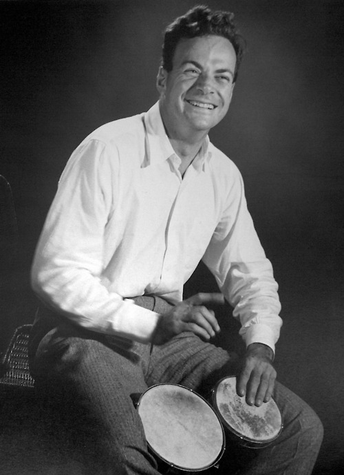

Richard Feynman playing the bongo drums.
Richard Philips Feynman (May 11, 1918 - February 15, 1988) was an American theoretical phisicist known for his work in the path integral formulation of quantum electrodynamics, and the physics of the superfluidity of supercooled liquid helium, as well as in particle physics for which he proposed the parton model.
His notable awards are:
- 1954 Albert Einstein Award
- 1962 E. O. Lawrence Award
- 1965 Nobel Prize in Physics
- 1965 Follow of the Royal Society
- 1972 Oersted Medal
- 1979 National Medal of Science
If you want to read more about this revolutionary physicist, here's his
wikipedia page.